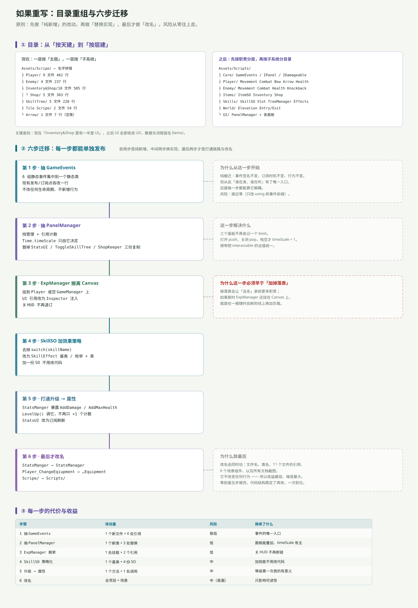

一句话说清
重写的顺序比重写的内容重要。先做「纯新增」，再做「替换实现」，最后做「改名」——因为这个顺序下，每一步都能单独发布、单独回滚。
反过来做（先改名、再动结构）会导致：改了 60 处名字，代码结构一点没变，还多了一次大 diff。
目录：从「按天建」到「按层建」

现在
Assets/Scripe/ ← 名字拼错（Script）
├ Player/ 9 文件 462 行
├ Enemy/ 4 文件 237 行
├ Inventory&Shop/10 文件 585 行
│ └ Shop/ 5 文件 303 行
├ SkillTree/ 5 文件 220 行
├ Tile Scripe/ 2 文件 54 行
└ Arrow/ 1 文件 7 行（空类）问题不是「目录太多」，是分类维度不统一：Player / Enemy 按「是谁」分，Inventory&Shop 按「干什么」分，Tile Scripe 按「放在哪」分。
后果是 Inventory&Shop 里一半是 UI（InventorySlot、ShopInfo、ShopSlot），另一半是数据与流程（ItemSo、InventoryManager、ShopManager）。你没法用「UI」这个词一次找全所有 UI。
之后
Assets/Scripts/
├ Core/ GameEvents / IPanel / IDamageable
├ Player/ Movement Combat Bow Arrow Health
├ Enemy/ Movement Combat Health Knockback
├ Items/ ItemSO Inventory Shop
├ Skills/ SkillSO Slot TreeManager Effects
├ World/ Elevation Entry/Exit
└ UI/ PanelManager + 各面板关键差别：先按职责分层（Core / 逻辑 / UI），再按子系统分目录。UI/ 一个目录就能回答「界面上有什么」。
六步迁移
每一步都能单独提交、单独发布。
第 1 步 · 抽 GameEvents
public static class GameEvents
{
public static event Action<int> MonsterDefeated;
public static event Action<int> LevelUp;
public static event Action<SkillSlot> AbilityPointSpent;
public static event Action<SkillSlot> SkillMaxed;
public static event Action<ItemSo, int> ItemLooted;
public static event Action<ShopManager, bool> ShopStateChanged;
}改什么：6 组事件集中到一个静态类；发布/订阅点各改一行（Enemy_Health.OnMonsterDefeated → GameEvents.MonsterDefeated）。
为什么放第一步：纯搬迁——事件签名不变、订阅时机不变、行为不变。但从此「谁在发、谁在听」有了唯一入口，后面五步都能靠它解耦。
风险：接近零（只改 using 和前缀）。
第 2 步 · 抽 PanelManager
public class PanelManager : MonoBehaviour
{
private readonly Stack<CanvasGroup> open = new Stack<CanvasGroup>();
public void Push(CanvasGroup panel)
{
open.Push(panel);
panel.alpha = 1; panel.blocksRaycasts = true; panel.interactable = true;
Time.timeScale = 0;
}
public void Pop(CanvasGroup panel)
{
if (open.Count > 0 && open.Peek() == panel) open.Pop();
panel.alpha = 0; panel.blocksRaycasts = false; panel.interactable = false;
if (open.Count == 0) Time.timeScale = 1; // ← 只有栈空才恢复
}
}改什么：StatsUI / ToggleSkillTree / ShopKeeper 三份复制代码各删掉一半。
解决什么：三个面板不再各记一个 bool；timeScale 只有一个主人；interactable 的设值统一（顺手修掉「两个面板少设一行」的不一致）。
风险：低。但要逐个验证「先开 A 再开 B、关 B」的序列。
第 3 步 · ExpManager 搬离 Canvas
改什么：把组件从 ExpCanvas 移到 Player 或一个空 GameManager；expSlider / currentLevelText 改为 Inspector 注入（跨物体引用）。
为什么必须早于「加掉落表」：掉落表会让「击杀」承担更多职责。如果那时 ExpManager 还挂在 Canvas 上，就是在一根随时会断的线上再加负载。
风险：低（1 处挂载 + 2 个引用），但必须重跑一次「关 HUD 后打怪」的验证。
第 4 步 · SkillSO 加效果策略
public abstract class SkillEffect : ScriptableObject
{
public abstract void Apply();
}
// MaxHealthEffect : SkillEffect → StatsManger.Instance.AddMaxHealth(1)
// UnlockCombat : SkillEffect → 打开近战改什么：去掉 switch(skillName)；4 份 SO 各挂一个 effect 资产。
解决什么：以后加一份技能 SO 不用改代码。现在 24 个格子里 8 个落进 default，就是因为「名字不在 switch 里」。
风险：中（要给 4 份 SO 重新配 effect）。
第 5 步 · 打通「升级 → 属性」
// StatsManger 新增
public void AddMaxHealth(int n) { maxHealth += n; healthText.text = ...; OnStatsChanged?.Invoke(); }
public void AddDamage(int n) { damage += n; OnStatsChanged?.Invoke(); }
// ExpManager.LevelUp() 末尾
stats.AddMaxHealth(1);改什么：StatsManger 暴露几个 AddXxx；LevelUp() 调它；StatsUI 改成订阅 OnStatsChanged 刷新。
解决什么：等级第一次真的有意义；属性面板不再显示开局快照。
风险：中（会影响手感，得重新调数值）。
第 6 步 · 最后才改名
StatsManger → StatsManager
Player_ChangeEqiupment → Player_ChangeEquipment
Scripe/ → Scripts/为什么放最后：改名会同时动文件名、类名、11 个文件的引用、6 个场景组件，以及所有文档截图。它不改变任何行为——收益最低、噪音最大。
等前面五步做完、结构稳定了再改，一次到位。
每一步的代价与收益
| 步骤 | 改动量 | 风险 | 换来了什么 |
|---|---|---|---|
1 抽 GameEvents | 1 个新文件 + 6 处引用 | 极低 | 事件的唯一入口 |
2 抽 PanelManager | 1 个新类 + 3 处替换 | 低 | 面板能叠加、timeScale 有主 |
3 ExpManager 搬家 | 1 处挂载 + 2 个引用 | 低 | 关 HUD 不再断链 |
4 SkillSO 策略化 | 1 个基类 + 4 份 SO | 中 | 加技能不用改代码 |
| 5 升级 → 属性 | 1 个方法 + 1 处调用 | 中 | 等级第一次真的有意义 |
| 6 改名 | 全项目 + 场景 | 中（易漏） | 只影响可读性 |
前两步加起来大约 80 行新代码，风险极低，但能一次性解决「面板互斥」和「事件散落」两个结构性问题。这是性价比最高的部分。
明确不建议做的三件事
① 不要先改名。 理由见第 6 步。
② 不要把 public 字段一次性全改成 GetComponent。 跨物体的引用改不成 GetComponent，硬改会把「漏拖」变成「空引用」——问题没解决，只是换了报错的位置。按「同一物体」和「跨物体」分批改。
③ 不要在没有存档系统之前做「数值重做」。 现在 level / gold / availablePoints 全在内存里，重开归零；数值调得再好，玩家也留不下来。
真正的顺序
如果只能做一件事，做这个：
补一张掉落表，把「敌人 → 物品」那条缺失的边接上。
它同时解决三件事：让「打怪」有回报、让物品链有了稳定来源、让 Loot / InventoryManager 的代码第一次真的被用到。
然后再按第 1、2、3 步做结构收敛。剩下四步（策略化、打通升级、改名）可以慢慢来——它们不改变「玩起来对不对」，只改变「改起来累不累」。
一句话总结
重构的目标不是「代码好看」，是让下一个改动只需要改一处。
按这个标准衡量：抽 GameEvents（6 处变 1 处）、抽 PanelManager（3 份变 1 份）、StatsManger 暴露 AddXxx（属性只有一个写入口）——这三件事都在把「多处」变「一处」。而改名只是把「一处」写得更顺眼。
回到体检报告：31 个文件的一次静态体检。